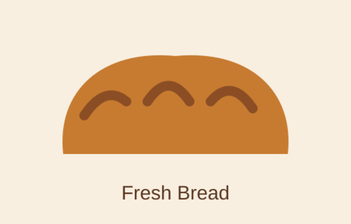
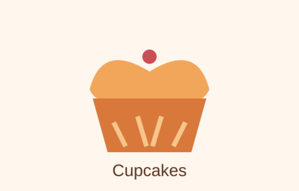
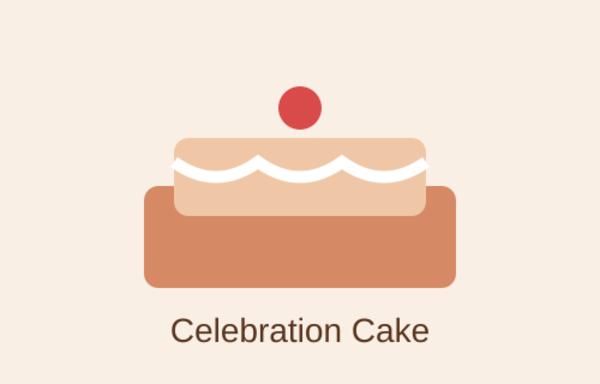

Fresh Bread
Soft, freshly baked bread suitable for breakfast, lunch or family meals.
From R18
Explore some of the products available from Ubuntu Bakery. Prices are indicative for this academic project and can be updated as the business develops.

Soft, freshly baked bread suitable for breakfast, lunch or family meals.
From R18

Decorated cupcakes for parties, school events and everyday treats.
From R12 each

Customised cakes for birthdays and special occasions. Contact us to discuss your design.
From R350